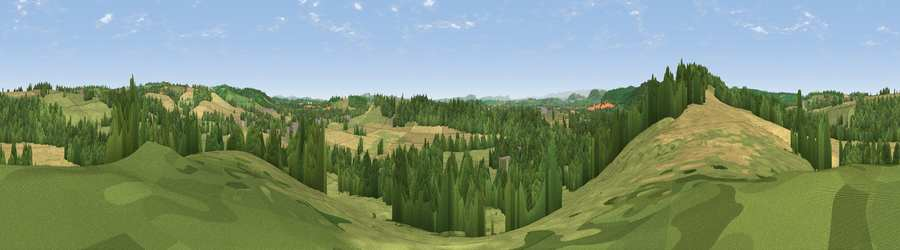

Viewpoint near Bodenham
#21490 in England · top 60% of its area beats it · near BodenhamThe view, rendered

A 360° render of this exact spot computed from the terrain model, tree cover and land cover — summer colours, afternoon light, calibrated against photographs of famous viewpoints. Real trees, hedges and buildings will differ in detail.
The panorama
Grey silhouette: terrain skyline in each direction (720 bearings, Earth curvature and refraction included). Dashed green: skyline with trees (+15 m) and buildings (+8 m) as obstacles. Blue strip: how far the ground is visible on each bearing.
Where the view opens
Wedge length = distance to the farthest visible ground on that bearing (vegetation-aware). Rings at 10, 25 and 50 km.
What fills the view
36% grassland · 33% cropland · 29% woodland · 1% built-up ·
Angular shares of the visible panorama (visual magnitude), not map area. Landscape diversity 0.51 (0–1 Shannon).
Key numbers
More beautiful places nearby
The staircase of upgrades: each row has a higher view potential than everything closer. Driving times are estimates from straight-line distance, calibrated against real road routing — check an actual route before setting out.
| Place | Direction | Drive | Score |
|---|---|---|---|
| Viewpoint near Bodenham | W · 1 km | ~4 min | 71.4 |
| Viewpoint near Pencombe | ENE · 6 km | ~12 min | 72.8 |
| Viewpoint near Westhope | W · 8 km | ~16 min | 77.0 |
| Viewpoint near Weobley | WSW · 12 km | ~23 min | 77.5 |
| Viewpoint near Weobley | W · 13 km | ~24 min | 79.7 |
| Seagar Hill | SSE · 15 km | ~27 min | 82.1 |
| Gatley Hill | NNW · 20 km | ~34 min | 82.6 |
| North Hill | ESE · 24 km | ~39 min | 86.8 |
52.15956, -2.68372 · source: screening · position refined by local search. Computed location — check access rights before visiting.